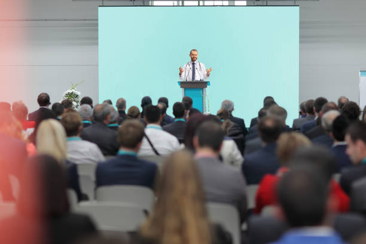

The conference will be held in the La Trobe University sport stadium, the event will take place from 9AM to 5PM on 27/7/2024. Click on the Travel button below to learn how to get here!
As mentioned in the homepage, there will be our special guest speaker John Doe, other than John Does we will have 3 more speakers.
Jasmine Gillie is a cybersecurity expert known for her practical approach and effective solutions. With her years of experience, she helped many businesses stay prevent online threats. Jasmine's strategies have made cybersecurity easier to understand and implement for companies from different backgrounds. She's excited about sharing her knowledge and believes that collaboration is the key to internet security. With Jasmine's attitude and expertise, this makes her a trusted leader in the cybersecurity community and is well known for what she does.
Marcus Thompson is a software engineer, he was in La Trobe University for his bachelor's degree. With years of experience Marcus started out as an Intern for Microsoft and worked his way up to the experienced individual he is currently. He will talk about his experience is a startup company the interesting working environments he has experienced throughout his career.
Isabelle Rodriguez also was a student in La Trobe University, she did her master's degree in Artificial Intelligence. Today she will be speaking about her experience in Artificial Intelligence. She will also cover the topics of Machine Learning, Neural Networks, Natural Language Proccesing and Deep Learning. As she is very experienced in the field she will also be talking about ways you can find emoployers and potray your skills to them.
| Time | Event | Speaker | Location |
|---|---|---|---|
| 09:00 AM - 09:30 AM | Registration | - | Main Hall |
| 09:30 AM - 10:30 AM | Opening - Intro with John Doe | John Doe | Main Hall |
| 10:30 AM - 11:00 AM | Coffee Break | - | Cafeteria |
| 11:00 AM - 12:00 PM | Cybersecurity Trends | Jasmine Gillie | Room A |
| 12:00 PM - 01:00 PM | Lunch Break | - | Cafeteria |
| 01:00 PM - 02:00 PM | Innovative Tech Solutions | Marcus Thompson | Room A |
| 02:00 PM - 03:00 PM | AI and the Future | Isabella Rodriguez | Room A |
| 03:00 PM - 04:00 PM | Networking Session | - | Cafeteria |
| 04:00 PM - 05:00 PM | Closing Story with John | John Doe | Main Hall |